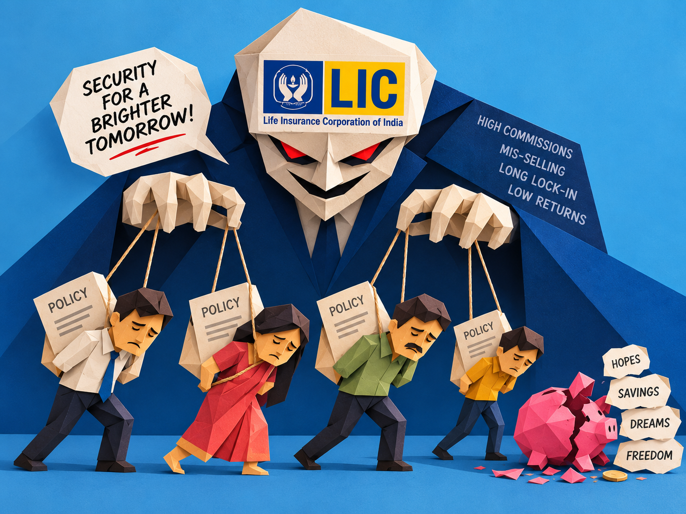

The agent who sold you “safety” was mostly making money for himself.

Published on September 4, 2026 | Category: Personal
Rajeev Agarwal was 39 years old. A close friend who worked as an LIC agent told him to buy the Jeevan Lakshya plan. The friend said it was a smart choice, insurance and savings in one place. Rajeev started paying ₹35,000 every year. After some time he saw the truth. The plan gave his family only ₹8 lakh of cover. The money he put in grew very slowly, just 4 or 5 percent a year. When he checked how much he would get if he stopped the plan early, it was less than what he had already paid. He later said that ₹8 lakh cover for a family of four is a joke. If he had put the same money in mutual funds, it could have grown much faster.[1]
This happens to many people. Agents push these plans because they earn big commissions. The plans look good on paper. They are not good for you.
Both LIC and the agents are at fault
Agents work only for commission. They earn 25 to 35 percent of the first year’s premium on these mixed plans. On pure term plans they earn much less. So they push the expensive plans. They do not care about what is best for you or your child’s future. They care about lining their own pockets.
LIC is equally at fault. LIC designed these plans with low returns and harsh rules if you stop early. LIC set the high commissions that reward agents for selling them. LIC keeps selling the same products even after knowing the problems. When agents cheat or mis-sell, courts have often made LIC pay because the agents work under its name.
Being an LIC agent is not a real career. It is closer to a con job. The agent’s income depends on tricking people into plans that give poor cover and poor returns. The more people they trap, the more they earn. That is not a profession. That is a system built on taking advantage of trust.
If you stop the plan early, you lose most of your money
For older LIC plans (bought before October 2024):
- In the first two or three years you get almost nothing back if you stop.
- After three years, the guaranteed money you get back is often only about 30 percent of the premiums you paid (not counting the first year).
- You may get a bit more under the special calculation, but you still lose a lot.
Forbes Advisor says clearly: after three years you often get only 30 percent of the premiums (leaving out the first year).[2][3]
New plans (from October 2024) are a little better. You can get some money back after one year. Most people still hold the old plans. Those old rules still hurt them. LIC even cut agent commissions after the new rules came.[4][5]
Check your own plan today. Log in at licindia.in or open the LIC app. Look at your policy paper. Call the branch and ask for the exact money you would get if you stop now. Get it in writing.
Many people stop these plans early. Last year almost 39 percent of the money life insurers paid out was for people who stopped or took money out early. That number keeps rising.[6]
These plans do two jobs badly
They promise safety for your family and growth of your money. They do neither well.
Studies show most popular LIC plans give only 4 to 6 percent return over many years. That is like a post-office deposit. It does not beat rising prices.[7]
Look at the cover. A 30-year-old paying about ₹1.2 lakh a year in an endowment plan may get only ₹12–15 lakh cover. The same money can buy ₹1 crore pure term cover for ₹10,000–12,000 a year. The rest can go into better investments.
Simple example:
A 30-year-old wants ₹50 lakh cover for 20 years.
- Pure term plan: about ₹700 a month.
- LIC-style endowment: about ₹2,800 a month.
The extra ₹2,100 each month, if put in a good mutual fund at 12 percent, becomes more than ₹2 crore in 20 years. The LIC plan gives far less.[8][9]
LIC itself has said mis-selling is a big problem. Complaints about unfair selling went up and make up more than 22 percent of all life insurance complaints.[10]
About tax: You get the tax break on the premium only if you choose the old tax rules. Under the new tax rules (the ones most people use now) there is no tax break for the premium at all. Agents still talk about the tax benefit. For people on the new rules, that talk is empty.[11][12]
Real stories of loss
Some people who paid for years on Jeevan Saral got back less money at the end than they had paid in. Agents had promised high returns that the plan never gave.[13]
In one place two agents used fake death papers for 39 living people and took ₹1.52 crore. In Chennai an agent took premiums into his own account and stole ₹2.54 crore from one customer. In another town an agent gave fake receipts for 15 years while the plan had already stopped. Courts have made LIC pay when agents stole money.[14][15]
Simple rule: Never give cash or pay into the agent’s personal bank account. Always check the agent’s code on the official LIC website. Buy pure term online or through someone who does not earn commission on the plan.
Pure term insurance is the clear choice
Life insurance has one job: if you die, your family gets money to live. Pure term does that job cleanly and cheaply. You can buy big cover with small premiums. Put the money you save into better investments.
Some people like traditional plans because the money is “forced” savings. You can force savings with automatic mutual fund investments instead. Traditional plans give low growth and lock your money. Pure term does not.
LIC also sells pure term plans. The problem is not that pure term does not exist. The problem is that the commission system pushes agents to sell the expensive mixed plans instead.
What you should do now
- Work out how much cover your family needs, usually 10 to 15 times your yearly income.
- Buy pure term cover for that amount. Buy online or through a fee-only advisor.
- Put the money you save (the difference in premium) into good investments.
- Check your term plan every few years.
- If you already have old LIC mixed plans, open the papers this week. Ask for the exact money you would get if you stop. Compare it with keeping the plan. Many people find stopping and putting the money elsewhere is better.
- Never buy insurance thinking it will make you rich. And remember, under the new tax rules there is no tax break on the premium.
Agents line their pockets with commissions. LIC built the system that pays them to do it. Both care more about their own money than about the policyholder. Being an LIC agent is not a career. It is closer to a con job that runs on trust and poor information. The numbers on returns, the 30 percent rule when you stop early, the rising number of people who quit, the complaints, and the missing tax break under the new rules all say the same thing: buy pure term. Protect your family. Do not feed this system.
There once was an agent quite greedy,
Who sold you a plan that was seedy,
Sucking cash from your kid’s future years,
While you paid for their living with tears.
Stop buying LIC, buy pure term, be speedy!
References
- Economic Times: Rajeev Agarwal's Jeevan Lakshya experience
- Forbes Advisor: How to Surrender LIC Policy
- Credyfi: How to Calculate Surrender Value of LIC Policy
- The Hindu: IRDAI's revised surrender norms explained
- Livemint: LIC agents commission cut protests
- Economic Times: Life insurance surrenders surge to 39%
- Value Research: The ₹55 lakh cost of choosing LIC over SIP
- Hatlet Ventures: Term Insurance vs LIC - Which is better
- Wealthease: Term Insurance Plus Mutual Funds Strategy
- Livemint: LIC flags rampant mis-selling in life insurance
- Olambit: Section 80C under the New Income Tax Rules
- Ditto: Life Insurance Tax Benefits
- Moneylife: Will LIC be made to pay for horrible mis-selling of Jeevan Saral
- The Hans India: 2 LIC agents pocket ₹1.52 crore claims
- The Hindu: LIC agent arrested for cheating customer of ₹2.54 crore